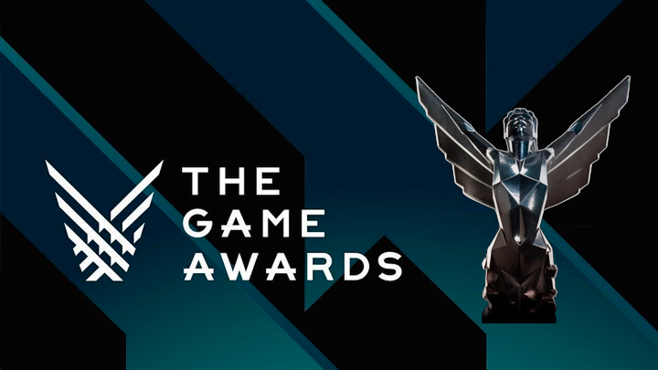

The Game Awards
The Game Awards son una gala de premios que honra los logros artísticos y técnicos en la industria. Realizada por primera vez el 5 de diciembre de 2014 en el AXIS Theatre de Las Vegas, y son los sucesores directos de los extintos premios Spike VGA/VGX, que desde 2003 hasta 2013 presentaron la ceremonia a través del canal Spike TV. Estos premios cuentan con el apoyo de grandes empresas de la industria, tales como Activision, AMD (Advanced Micro Devices), Electronic Arts, Epic Games, Kojima Productions, Konami, Microsoft, Nintendo, Riot Games, Rockstar Games, Sony Interactive Entertainment, Tencent, Ubisoft, Valve Corporation y Warner Brothers. Además de premiar a los mejores juegos del año en diversas categorías, la gala también sirve como medio para la presentación de futuros juegos y contenidos descargables.
The Game Awards 2024
Innegablemente, The Game Awards se convirtió en la premiación más popular de la industria de los videojuegos debido a los numerosos anuncios y otras sorpresas que tienen lugar durante la transmisión en vivo. La edición de este año llegó a su fin, pero el evento regresará en 2024.
Fecha, hora y sedes de The Game Awards 2024
The Game Awards 2024 tendrá lugar el jueves 12 de diciembre en el
Peackock Center de Los Ángeles, California. Esta sede también llegó
a ser conocida como The Nokia Theater y posteriormente Microsoft
Theater.
Si bien el evento se organiza en una sede física
en California, Estados Unidos, este podrá seguirse a través de una
transmisión en vivo a partir de las 19:30 de la tarde ET y 16:30
p.m. (hora estándar del Pacífico). En Ciudad de México, The Game
Awards comenzará a las 18:30 horas.